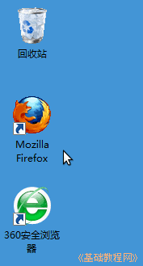
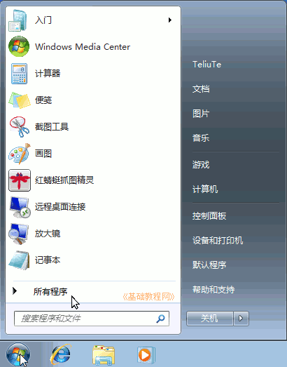
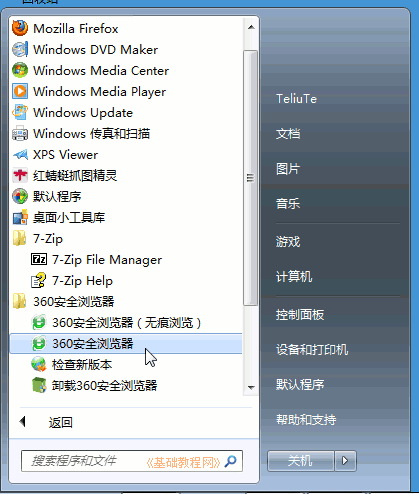
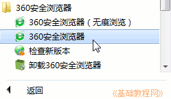
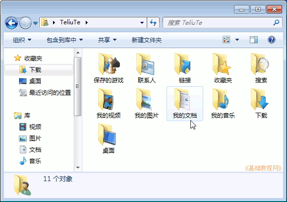
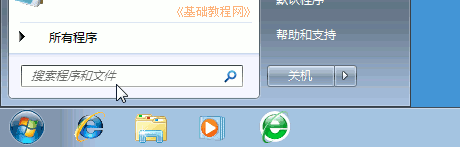
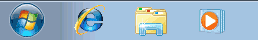
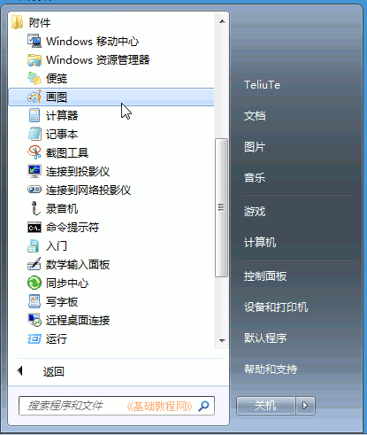

Windows7 基础入门教程
作者：TeliuTe 来源：基础教程网
三、运行程序 返回目录 下一课电脑中的各项任务是由程序来完成的，不同的任务由不同的程序或软件来完成；
1、找到程序
1）在桌面上的图标里寻找，许多的程序会在桌面上放一个快捷方式，就是一个带箭头的小图标，双击这个图标就会打开它所对应的程序；

2）在“开始”菜单中寻找，单击任务栏左边的“开始”按钮，就会弹出一个菜单，里面有一项“所有程序”，

3）鼠标移过去点一下，就会显示安装的程序菜单项，每一项就代表一个应用程序，单击一个菜单项，就会启动相应的程序；

4）开始菜单中有许多项目，一般彩色的图标代表了运行应用程序，而一个卸载的图标则是删除应用程序（千万别乱点）；

5）用户的文件一般放在自己的用户文件夹的“我的文档”文件夹中；

6）如果找不着自己的文件，可以使用开始菜单中的“搜索”命令，按提示一步一步操作就可以了；

2、常用程序的位置
1）IE 浏览器，库文件夹和媒体播放器在下边的任务栏里，单击就可以运行；

2）大多数应用程序都在开始菜单的所有程序里，有一个菜单选项，找彩色图标点击；
3）“记事本”、“画图”和“写字板”都在“开始”菜单的“所有程序”的“附件”里，注意瞄准了点击，鼠标别乱动；

3、练习
1）在任务栏里打开IE 浏览器，库文件夹，成功后在关闭它；
2）在桌面上找一个快捷方式，双击运行这个程序，成功后在关闭它，再试一个；
3）在附件里找到“记事本”程序项，单击运行，成功后关闭它，如果出现是否保存的提示，选“否”，同样再运行“画图”；
本节学习了运行程序的基础知识，如果你成功地完成了练习，请继续学习下一课内容；
本教程由86团学校TeliuTe制作|著作权所有
基础教程网：>http://teliute.org/
美丽的校园……
转载和引用本站内容，请保留作者和本站链接。